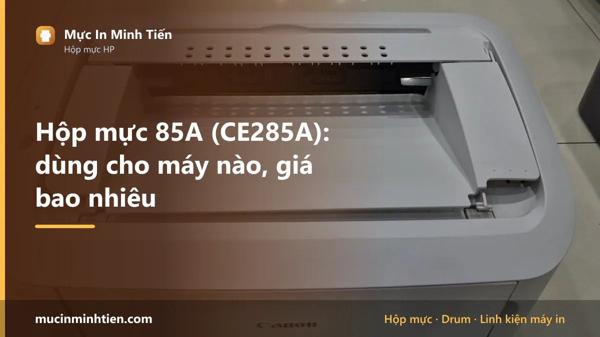
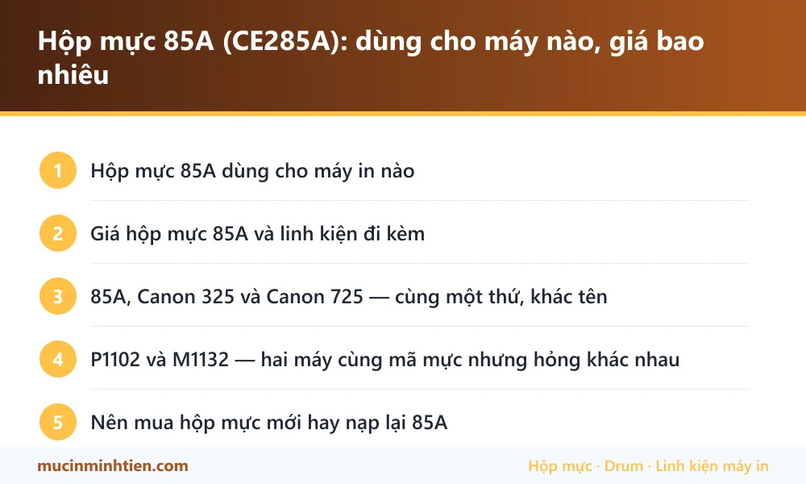

Hộp mực 85A (CE285A): dùng cho máy nào, giá bao nhiêu

Hộp mực 85A (mã HP CE285A) dùng cho HP LaserJet P1102, P1102w, M1132, M1212nf và các máy Canon LBP 6000, 6018, MF3010 dưới tên Cartridge 325. Một hộp đầy in được khoảng 1.600 trang.
Hộp mực 85A dùng cho máy in nào
| Dòng máy | Model cụ thể | Ghi chú |
|---|---|---|
| HP LaserJet | P1102, P1102w, P1109 | Dòng máy in nhỏ gọn rất phổ biến ở văn phòng nhỏ |
| HP LaserJet đa năng | M1132, M1212nf, M1214nfh, M1217nfw | Máy in kèm scan, copy và fax |
| Canon LBP | 6000, 6018, 6020, 6030, 6030w | Canon gọi là Cartridge 325 hoặc 725 tùy thị trường |
| Canon MF | 3010 | Máy đa năng nhỏ dùng chung mã 325 |
Giá hộp mực 85A và linh kiện đi kèm
Bảng dưới là hàng đang có tại kho 77 Bắc Hải, Phường Diên Hồng, TP.HCM, giá tham khảo cho khách lẻ. Đây là giá thật trong bảng giá công khai, không phải giá quảng cáo.
| Sản phẩm | Nhóm | Giá tham khảo |
|---|---|---|
| Bộ 5 chíp Hp 85a, Canon 325, cho HP 1102w, 1132, 1212, m1212nf, p1102, Canon LBP 6000, 6030 - chíp 85A | Linh kiện khác | 50.000 đ |
| Combo 5 Trục sạc 35A-85A-83A-78A-36A - sạc 35A | Linh kiện khác | 80.000 đ |
| COMBO 5 cây Trục từ 35A-36A-85A-78A-83A-1005-1006-1505 - từ 35A | Trục từ | 80.000 đ |
| combo 5 Chip U9A1 Đa Năng chip cho HP CB435A/CB436A/CE285A/CE278A/CE505A/CF280A/CE255A/CC364A - Chip U9A1 Đa Năng chip cho HP CB435A/CB436A | Chip & Seal | 75.000 đ |
| Combo 5 Gạt nhỏ HP 35A/85A/36A/78A/83A/79A CA 328/337 - Gạt nhỏ 35A | Gạt mực | 30.000 đ |
| Combo 5 Gạt lớn HP 35A/85A/36A/78A/83A/79A CA 328/337 - Gạt lớn 35A | Gạt mực | 40.000 đ |
| Gạt lớn+nhỏ 35A-85A-78A-83A-5cặp - Gạt lớn+gạt nhỏ 35A | Gạt mực | 75.000 đ |
| Mực In Laser 85A-35A cho máy Canon 6030, 6030W, HP 1102, 1102W, 1132MFP, 1212MFP - Mực laser 85 | Hộp mực & mực in máy in | 119.000 đ |
| Hộp mực HP 85A (CE285A) chính hãng — Minh Tiến | Hộp mực & mực in máy in | 180.000 đ |
| Hộp mực in RT 85A / HP 1102, M1132, M1212NF, Canon 325 - RT 85A | Hộp mực & mực in máy in | 250.000 đ |
| Nhông lô ép HP 1102/1006/85A (nhông xéo) - Nhông lô ép 1102 | Lô sấy, lô ép & linh kiện sấy | 50.000 đ |
| Lô ép 1102 - 85A - 78A - 83A - 79A Canon 6200 / 6230 ( màu cam ) - Lô ép 85A | Lô sấy, lô ép & linh kiện sấy | 110.000 đ |
| Lô ép 1102 - 85A - 78A - 83A - 79A Canon 6200 / 6230( MÀU ĐEN) - Lô ép 85A đen | Lô sấy, lô ép & linh kiện sấy | 110.000 đ |
| Quả đào tách giấy 35A/85A/36A HP P1005/1102 - Quả đào 35A/85A/36A | Giấy in & Ruy băng | 25.000 đ |
Không thấy mã cần tìm? Dùng công cụ tra cứu theo model máy hoặc xem bảng giá đầy đủ 773 mã.
85A, Canon 325 và Canon 725 — cùng một thứ, khác tên
Đây là nhóm mã gây nhầm lẫn nhiều nhất khi khách mua hàng online. Cùng một loại hộp mực nhưng được đặt ba tên khác nhau tùy hãng và tùy thị trường:
- HP 85A / CE285A — cho máy HP dòng P1102 và M1132.
- Canon Cartridge 325 — cho Canon LBP 6000, 6018, MF3010, bán chính thức ở châu Á.
- Canon Cartridge 725 — cùng loại, tên dùng ở thị trường châu Âu.
Ba mã này lắp lẫn được cho nhau về mặt cơ khí. Điểm cần lưu ý là chip: hộp chính hãng có chip khai báo đúng model, nếu lắp chéo hãng máy có thể báo lỗi nhận diện dù vẫn in được. Khi mua, cứ nói tên máy in thay vì đọc mã mực là chắc ăn nhất.
P1102 và M1132 — hai máy cùng mã mực nhưng hỏng khác nhau
Dù dùng chung hộp mực, hai dòng máy này có bệnh đặc trưng riêng, và biết trước sẽ đỡ mua nhầm linh kiện:
HP P1102 hay gặp kẹt giấy và kéo nhiều tờ do quả đào chai — đây là máy in nhẹ, khay giấy hở nên bụi vào nhiều. Bản in mờ ở dòng này thường do trục từ chứ ít khi do drum.
HP M1132 nặng hơn, có bộ scan phía trên, hay gặp lỗi cụm sấy sau vài năm sử dụng — bản in nhòe, chạm tay là ra mực. Lúc đó phải thay lô sấy chứ không phải thay hộp mực.
Nếu máy bạn đang kẹt giấy liên tục, xem thêm cách xử lý máy kéo nhiều tờ giấy — nguyên lý và bộ phận cần thay giống nhau ở hầu hết máy in laser để bàn.
Nên mua hộp mực mới hay nạp lại 85A
85A nạp lại tốt và rẻ. Do dùng chung phôi với 35A và 36A, linh kiện rời rất sẵn: gạt mực, trục từ, chip, seal đều có trong kho.
Điểm cần chú ý riêng của mã này là chip. Hộp mực 85A chính hãng có chip đếm số trang. Nạp đầy mực mà không xử lý chip thì máy vẫn báo hết mực và dừng in. Vì vậy khi nạp mực cho 85A, luôn hỏi thợ có thay chip kèm hay không — chi phí chip không cao nhưng bỏ qua thì công nạp thành vô ích.
Nên thay hộp mới khi vỏ đã nứt, drum xước gây sọc, hoặc hộp đã nạp trên bốn lần và mỗi lần chỉ dùng được vài trăm trang.

Câu hỏi thường gặp về hộp mực 85A
Hộp mực 85A và Canon 325 có giống nhau không?
Máy P1102 báo hết mực nhưng hộp còn mực thì làm sao?
Hộp mực 85A in được bao nhiêu trang?
Nạp mực 85A có cần thay chip không?
Bài viết liên quan
- HP 107a in mờ, nhạt chữ: 6 nguyên nhân và cách xử lý
- Cách reset máy in HP và xử lý lỗi chấm than
- Cách chọn mực in đúng máy, bền máy và tiết kiệm
- Hộp mực 107A: dùng cho máy nào, giá bao nhiêu
- Hộp mực 49A: dùng cho máy nào, giá bao nhiêu
- Tra hộp mực và linh kiện theo model máy in
- Nạp mực máy in tận nơi TP.HCM từ 80.000đ